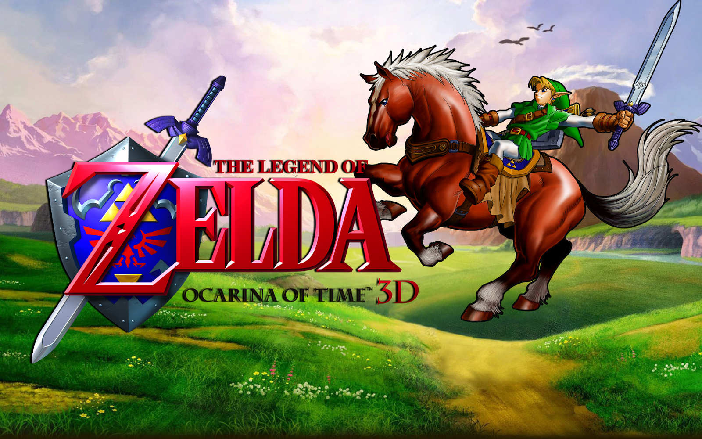
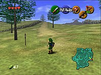
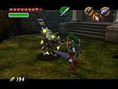

The Legend of Zelda: Ocarina of Time é um jogo eletrônico de ação e aventura desenvolvido e publicado pela Nintendo para o Nintendo 64. Foi lançado no Japão em 21 de novembro de 1998; na América do Norte em 23 de novembro de 1998; e na Europa em 11 de dezembro do mesmo ano

Jogabilidade


O jogador navega pelo vasto Hyrule Field, o ponto central do mundo. A exibição na tela mostra ações mapeadas a botões sensíveis ao contexto.
Quando o jogador usa Z-targeting, a visão muda para um formato letterbox e as setas indicam o inimigo alvo. O jogador pode então circular em torno do inimigo para manter sua visão sobre eles. Nesta captura de tela em particular, Link está lutando contra um Wolfos na entrada do Forest Temple.
Ocarina of Time foi desenvolvido simultaneamente com Super Mario 64 e Mario Kart 64 para o Nintendo 64 (N64) pela Nintendo Entertainment Analysis & Development . O jogo teve um orçamento superior a 12 milhões de dólares.Mais de duzentas pessoas trabalharam no jogo.